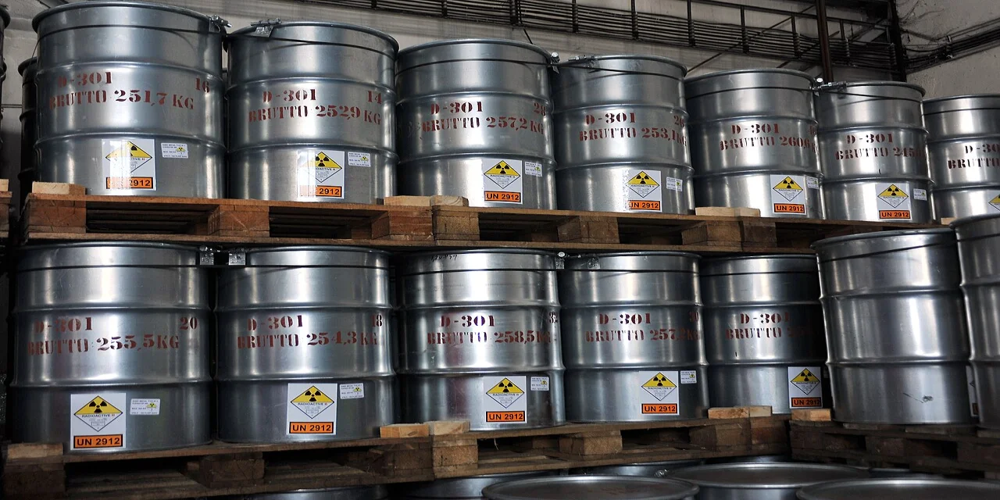

우라늄 투자에서 주주들이 가장 자주 놓치는 부분은 가격 그래프가 아니라 물량표입니다. 원전이 늘어난다는 말은 익숙하지만, 원자로가 실제로 연료를 장전하려면 광산에서 우라늄이 나오고, 정련·전환·농축·연료 제조를 거쳐야 합니다. 이 과정은 소프트웨어처럼 수요가 늘었다고 곧바로 복제되는 구조가 아닙니다. 향후 10년 원전 수요를 볼 때 핵심 질문은 “우라늄 가격이 오를까”가 아니라 “광산과 연료 공급망이 필요한 물량을 제때 맞출 수 있을까”입니다.
세계원자력협회 기준으로 2025년 세계 가동 원전은 438기, 설비는 400,581MWe입니다. 건설 중 원전은 80기이고, 계획 단계 원전도 124기로 집계됩니다. 같은 표에서 2025년 원자로 우라늄 요구량은 68,920tU로 제시됩니다. 반면 2024년 세계 우라늄 광산 생산량은 60,213tU였습니다. 단순 비교만 해도 원자로 요구량과 광산 생산량 사이에는 이미 여유가 많지 않습니다.
물론 원전 연료 시장은 재고, 재처리, 농축 잔여물, 장기 계약이 함께 움직이기 때문에 한 해 생산량과 한 해 요구량을 그대로 가격 공식으로 바꾸면 안 됩니다. 하지만 투자자가 봐야 할 방향은 분명합니다. 수요는 원자로 가동, 수명연장, 신규 건설로 천천히 잠기고, 공급은 광산 허가와 재가동, 인력, 밀링, 전환, 농축에서 훨씬 느리게 풀립니다. 이 느린 공급 구조가 향후 10년 우라늄 병목의 핵심입니다.
원전 수요는 전력 수요와 수명연장에서 먼저 잠깁니다

원전 수요를 볼 때 새 원전만 보면 늦습니다. 이미 가동 중인 원전이 수명연장으로 더 오래 돌아가는 순간, 그 원자로는 매년 계속 우라늄을 필요로 합니다. 신규 원전은 뉴스가 크지만, 기존 원전의 수명연장은 조용히 장기 수요를 고정합니다. 미국, 프랑스, 한국, 일본, 중국처럼 기존 원전 기반이 있는 국가는 새 원전 건설보다 먼저 기존 설비의 재가동과 연장 운영에서 수요가 만들어집니다.
세계원자력협회 표에서 미국은 94기 원전, 중국은 61기 원전을 보유합니다. 중국은 건설 중 39기로 가장 공격적인 증설 흐름을 보입니다. 한국도 26기 가동, 4기 건설 중으로 표시됩니다. 이 숫자는 원전이 더 이상 “먼 미래 에너지”가 아니라 이미 돌아가는 대형 전력 인프라라는 점을 보여줍니다. 데이터센터, 전기화, 산업 전력 수요가 커질수록 안정적인 기저 전원은 다시 평가받습니다.
다만 여기서 조심해야 합니다. 원전이 늘어난다고 모든 우라늄주가 같은 속도로 좋아지는 것은 아닙니다. 전력회사는 연료를 안정적으로 확보하려고 장기 계약을 선호합니다. 그래서 현물 가격이 뛰어도 생산자가 계약 구조상 바로 전부 가져가지 못할 수 있습니다. 반대로 가격이 잠시 내려도 장기 계약이 재가격화되는 구간에서는 생산자의 실현 가격이 천천히 좋아질 수 있습니다.
첫 장전 수요는 사람들이 생각하는 것보다 큽니다
관련 영상
[보고서] AI가 견인하는 전력 혁명: 미국 원전 건설 빅사이클과 한국의 전략적 기회
우라늄 병목을 이해하려면 새 원전의 첫 장전 수요를 봐야 합니다. 세계원자력협회는 원전 1GWe 신규 용량이 통상 연간 약 150tU의 추가 광산 생산을 필요로 하고, 첫 장전에는 약 300~450tU가 필요하다고 설명합니다. 첫 장전은 원자로가 처음 상업 운전에 들어가기 전에 들어가는 연료입니다. 이후 매년 필요한 교체 연료보다 초기 물량이 더 큽니다.
이 점이 중요합니다. 건설 중인 80기가 모두 같은 해에 들어오는 것은 아니지만, 신규 원전이 순차적으로 완공될 때마다 초기 장전 물량이 앞당겨집니다. 전력회사는 원전 완공 직전에 연료를 사는 방식으로 움직이지 않습니다. 인허가, 전환, 농축, 연료 제조까지 걸리는 시간을 고려해 몇 년 전부터 확보하려 합니다. 그래서 우라늄 가격은 실제 원자로 가동일보다 먼저 움직일 수 있습니다.
원전 수요는 단순히 “전력 소비가 늘었다”는 말보다 훨씬 끈적합니다. 원전은 한 번 짓고 나면 수십 년 동안 운전해야 경제성이 맞습니다. 연료비는 원전 총비용에서 큰 비중이 아니지만, 연료가 없으면 원자로는 멈춥니다. 전력회사 입장에서는 조금 비싸게 사더라도 안정적인 장기 공급을 확보하는 것이 더 중요합니다. 이 구조가 우라늄 생산자에게 협상력을 줄 수 있습니다.
광산 생산은 가격보다 허가와 가동률에 묶입니다
2024년 세계 우라늄 광산 생산량은 60,213tU였습니다. 생산의 약 75%는 카자흐스탄, 캐나다, 나미비아에서 나왔습니다. 카자흐스탄은 23,270tU로 세계 생산량의 39%, 캐나다는 14,309tU로 24%, 나미비아는 12%를 차지했습니다. 공급이 몇몇 국가와 광산에 집중되어 있다는 뜻입니다. 가격이 오른다고 세계 곳곳에서 새 물량이 곧바로 나오는 구조가 아닙니다.
광산은 허가, 환경평가, 지역사회 협의, 인력, 장비, 산성 용액 또는 지하 채굴 조건, 밀링 시설까지 함께 맞아야 합니다. 이미 있는 광산도 유지보수와 품위 변화에 영향을 받습니다. 카메코는 2026년 1분기 공식 발표에서 McArthur River/Key Lake와 Cigar Lake 생산이 계획대로 진행 중이라고 설명했고, 2026년 우라늄 부문 생산 가이던스로 자사 몫 19.5~21.5Mlb U3O8을 제시했습니다. 이런 대형 생산자의 가이던스가 중요한 이유는 신규 개발사보다 실제 물량 확인이 빠르기 때문입니다.
반대로 넥스젠 에너지 같은 개발형 종목은 미래 공급 옵션입니다. 캐나다 Athabasca Basin의 고품위 프로젝트가 장기 공급 부족을 메울 수 있다는 기대를 받지만, 생산이 시작되기 전까지는 매출이 아니라 허가, CAPEX, 자금조달, 오프테이크 계약이 핵심입니다. 우라늄 가격이 높아져도 광산이 완공되지 않으면 주주에게 돌아오는 현금흐름은 없습니다. 그래서 개발사는 기대와 일정의 차이를 냉정하게 봐야 합니다.
병목은 광산 다음에도 계속됩니다
많은 투자자가 우라늄 광산만 봅니다. 하지만 원전 연료는 광산에서 끝나지 않습니다. 우라늄 정광은 전환을 거쳐 UF6가 되고, 농축을 통해 필요한 농축도로 올라간 뒤, 연료 집합체로 제조됩니다. 이 과정마다 설비와 규제가 필요합니다. 특히 러시아 의존도 축소가 계속될수록 서방권 전환·농축 능력은 별도의 병목이 됩니다.
이 지점에서 에너지 퓨얼스 같은 종목이 단순 광산주와 다르게 보입니다. 회사의 핵심은 우라늄 가격 노출뿐 아니라 미국 내 처리·밀링 인프라와 전략 광물 처리 역량입니다. 미국 내 광산 생산이 세계 생산에서 작은 비중에 머무는 상황에서는 광산 자체보다 처리 시설과 공급망 재건이 정책적으로 더 주목받을 수 있습니다. 다만 비우라늄 사업이 섞이면 투자 논리도 복잡해집니다. 순수 우라늄 가격 베팅으로 보면 안 됩니다.
우라늄 에너지도 비슷하게 단순 가격주가 아닙니다. 미국 내 ISR 생산 재개, 프로젝트 포트폴리오, 허가된 자산, 보유 재고, 장기계약 가능성을 함께 봐야 합니다. 생산 전환형 기업은 가격 상승기에 주가 레버리지가 클 수 있지만, 생산 지연과 자금조달 리스크도 큽니다. 우라늄 가격이 오른다는 이유만으로 개발·재가동 기업을 모두 같은 방식으로 평가하면 위험합니다.
관련 종목은 같은 우라늄주가 아닙니다
카메코는 현재 생산과 계약 재가격화를 보는 대형 생산자입니다. 주주는 생산량, 평균 실현 가격, 장기 계약, McArthur River·Key Lake·Cigar Lake 가동률을 봐야 합니다. 카메코는 2026년 3월 말 기준 현금·현금성자산·단기투자 11억 달러와 총부채 10억 달러를 보고했습니다. 대형 생산자답게 개발사보다 재무 안정성은 높지만, 이미 원전 르네상스 기대가 주가에 반영됐는지는 별도로 봐야 합니다.
우라늄 에너지는 미국 공급망 재건 옵션입니다. 핵심은 미국 내 생산 재개가 얼마나 빨리 실제 물량으로 이어지는지입니다. 허가와 처리 시설, 재고, 계약이 맞아야 합니다. 넥스젠 에너지는 캐나다 신규 대형 광산 옵션입니다. 성공하면 공급 부족을 메울 수 있는 큰 자산이지만, 상업 생산 전까지는 허가·건설·자금조달이 더 중요합니다. 에너지 퓨얼스는 미국 내 밀링과 전략 광물 처리 역량까지 보는 종목입니다.
이 네 종목을 한 줄로 “우라늄주”라고 묶으면 오히려 판단이 흐려집니다. 카메코는 현재 공급, 우라늄 에너지는 미국 재가동 옵션, 넥스젠은 미래 대형 광산 옵션, 에너지 퓨얼스는 미국 내 처리 병목 옵션입니다. 투자자는 우라늄 가격 하나보다 각 회사가 병목의 어느 위치에서 돈을 벌 수 있는지 먼저 구분해야 합니다.
앞으로 확인할 숫자는 여섯 가지입니다
첫째는 세계 원자로 요구량과 광산 생산량의 차이입니다. 2025년 요구량 68,920tU와 2024년 생산량 60,213tU의 차이가 앞으로 좁혀지는지, 더 벌어지는지 봐야 합니다. 둘째는 건설 중 원전의 상업 운전 일정입니다. 첫 장전 수요가 실제 구매로 바뀌는 시점을 가늠할 수 있습니다. 셋째는 카자흐스탄, 캐나다, 나미비아의 생산 가이던스입니다. 공급 집중도가 높기 때문에 한 국가의 지연도 가격에 영향을 줄 수 있습니다.
넷째는 유틸리티 장기 계약입니다. 현물 가격보다 전력회사의 장기 계약 갱신 속도가 생산자의 실현 가격을 더 잘 설명할 때가 많습니다. 다섯째는 전환·농축 설비 투자입니다. 광산 물량이 있어도 연료로 바뀌지 못하면 병목은 계속됩니다. 여섯째는 개발사의 자금조달입니다. 우라늄 가격이 높아도 희석이 커지면 주주 수익률은 낮아질 수 있습니다.
긍정 시나리오는 분명합니다. 기존 원전 수명연장과 신규 원전 완공이 이어지고, 유틸리티가 장기 계약을 서두르며, 광산 생산과 전환·농축 능력이 수요를 따라가지 못하는 경우입니다. 이때 대형 생산자는 실현 가격 개선을, 개발사는 프로젝트 가치 재평가를 받을 수 있습니다. 부정 시나리오는 원전 건설이 지연되고, 재고가 생각보다 많으며, 고평가된 개발사가 자금조달 부담을 크게 겪는 경우입니다.
결론은 단순합니다. 향후 10년 원전 수요는 우라늄 시장에 우호적일 가능성이 큽니다. 그러나 좋은 테마와 좋은 투자는 다릅니다. 우라늄 투자는 가격 차트보다 원자로 요구량, 광산 생산량, 첫 장전 수요, 장기 계약, 전환·농축 병목, 회사별 자금조달 능력을 같은 표에 놓고 봐야 합니다. 이 순서를 지키면 원전 르네상스라는 큰 이야기 안에서도 실제로 돈을 벌 수 있는 위치와 아직 기대만 앞선 위치를 나눌 수 있습니다.